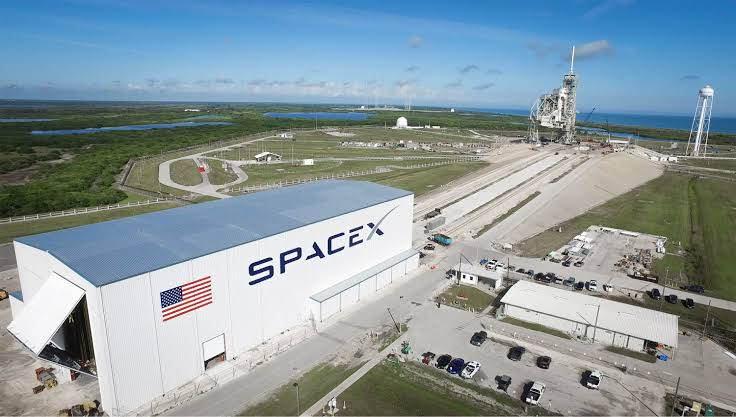
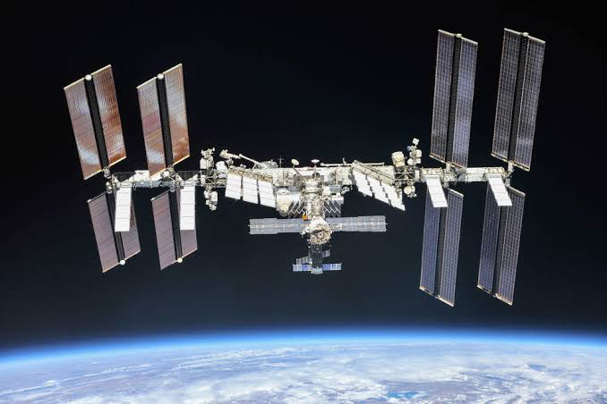
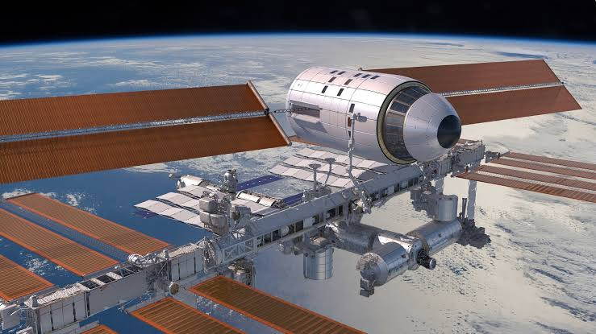
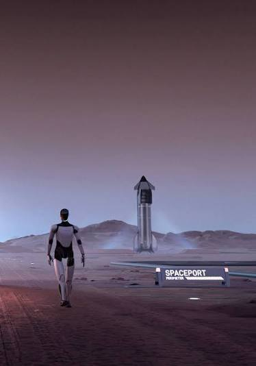
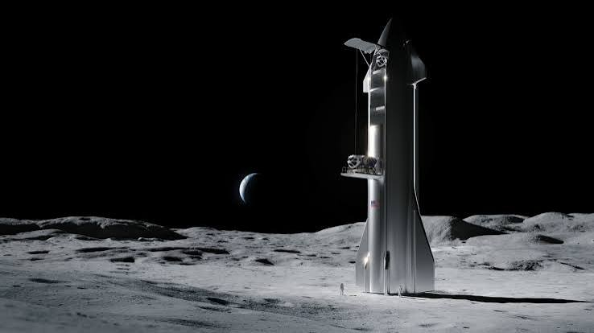
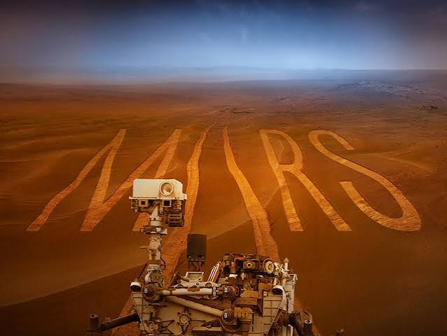

SpaceX
Space Exploration Technologies Corp., better known as SpaceX, is an American aerospace manufacturer and space transport services company headquartered in Hawthorne, California. It was founded in 2002 by Elon Musk with the goal of reducing space transportation costs to enable the colonization of Mars.
|
 SpaceX designs, manufactures and launches advanced rockets and spacecraft. The company has developed the Falcon 1, Falcon 9, and Falcon Heavy launch vehicles, as well as the Dragon spacecraft family, which delivers cargo and crew to the International Space Station (ISS). |
 SpaceX’s Starlink satellites are flat-panel, table-sized spacecraft orbiting in Low Earth Orbit. Weighing around 500 to 800 kg, each features advanced antennas for steering internet signals, lasers for routing data between satellites, and ion thrusters for precise movement and collision avoidance. After a 5-year lifespan, they burn up completely upon re-entering Earth's atmosphere to prevent space debris. |
 SpaceX has also been working on the Starship spacecraft, which is intended to be a fully reusable spacecraft capable of carrying humans to Mars and other destinations in the solar system. The company has achieved numerous milestones in spaceflight, including the first privately-funded spacecraft to reach orbit, the first privately-funded spacecraft to dock with the ISS, and the first privately-funded spacecraft to land on solid ground. |
Welcome to Mars

SpaceX is working on developing the technology and infrastructure necessary to establish a permanent human settlement on Mars. The company has outlined plans for a Mars colonization program, which includes the development of the Starship spacecraft, the construction of a Mars base, and the establishment of a self-sustaining colony on the Red Planet.
SpaceX has also been working on developing the technology necessary to support human life on Mars, including life support systems, food production systems, and radiation protection systems. The company has stated that it plans to send the first humans to Mars as early as the mid-2020s, with the goal of establishing a permanent human presence on the planet within the next few decades.
Mission MoonSpaceX has also announced plans to send humans to the Moon, with the goal of establishing a permanent human presence on the lunar surface. The company has outlined plans for a lunar colonization program, which includes the development of a lunar lander, the construction of a lunar base, and the establishment of a self-sustaining colony on the Moon. SpaceX has stated that it plans to send the first humans to the Moon as early as the mid-2020s, with the goal of establishing a permanent human presence on the lunar surface within the next few decades.  |
Mission MarsSpaceX has also announced plans to send humans to Mars, with the goal of establishing a permanent human presence on the Red Planet. The company has outlined plans for a Mars colonization program, which includes the development of the Starship spacecraft, the construction of a Mars base, and the establishment of a self-sustaining colony on Mars. SpaceX has stated that it plans to send the first humans to Mars as early as the mid-2020s, with the goal of establishing a permanent human presence on the Red Planet within the next few decades.  |